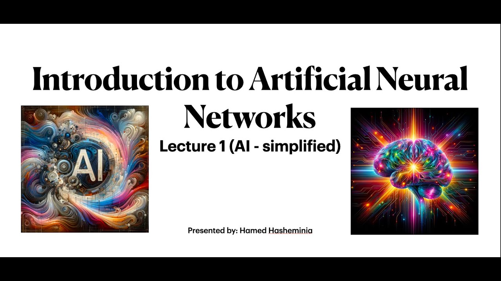

Introduction to Neural Networks
Instructor: Dr. Jane Doe
Year Recorded: 2023
Summary: This lecture provides a foundational understanding of neural networks, their components, and how they work, including practical examples.
Rating: 4.9/5 (850 reviews)
Return to Neural Network ResourcesTable of Contents
Section 1: What Are Neural Networks?
This section introduces neural networks, their biological inspiration, and their role in modern artificial intelligence.
(Youtube refused to connect. I left the rest of the videos with dummy values.)
Return to Table of ContentsSection 2: Components of a Neural Network
Learn about the fundamental components of a neural network, including neurons, layers, weights, and biases.
Return to Table of ContentsSection 3: Training a Neural Network
This section explains the process of training a neural network, including forward propagation, loss functions, and backpropagation.
Return to Table of ContentsSection 4: Applications of Neural Networks
Discover the wide range of applications of neural networks, from image recognition to natural language processing.
Return to Table of Contents